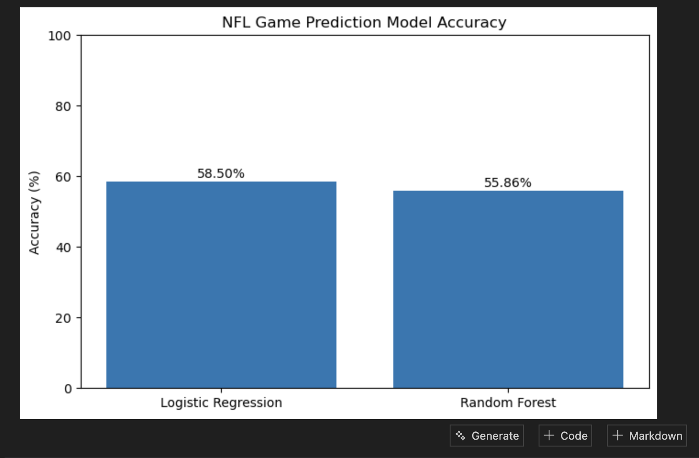
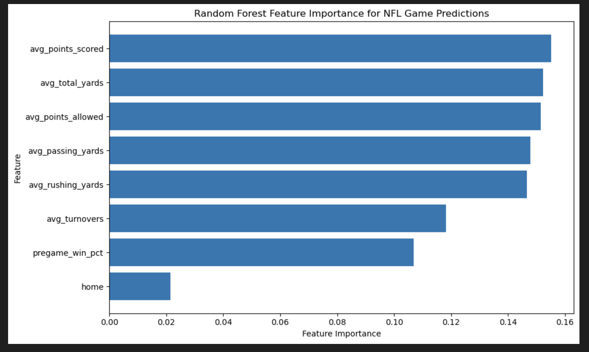

Problem and Dataset
Which team performance statistics are most useful for predicting NFL games outcomes, and how do Logistic Regression and Random Forest models compare in their predictive performance? Target Variable: Win The task is Classification because my target variable, win, has two categories. In a deeper definition, it’s binary classification because there are only two possible outcomes.
My research question I will be answering is
“Which team performance statistics are most useful for predicting NFL games outcomes, and how do Logistic Regression and Random Forest models compare in their predictive performance?”
Context and Supporting Research
The key variables I will be going over in this project include: Win/Loss, Points Scored, Points Allowed, Total Yards, Passing Yards, Rushing Yards, Turnovers, Turnover Differential, Win Percentage, and Home/Away.
The way I am conceptualizing each one is first by seeing whether the team won or lost the game (Win/Loss), Average points scored before the game (Points Scored), Average points allowed before the game (Points Allowed), Average offensive yards gained (Total Yards), Average passing yards gained (Passing Yards), Average rushing yards gained (Rushing Yards), Average turnovers committed (Turnovers), Turnovers gained minus turnovers lost (Turnover Differential), Team's win percentage before the game (Win Percentage), Whether the team is playing at home or away (Home/Away).
The way I will operationalize them is by Measured as 1 if the team wins and 0 if the team loses (Win/Loss), The team's average points allowed per game before the current game (Points Scored), The team's average points allowed per game before the current game (Points ALlowed), The team's average total offensive yards per game before the currwent game (Total Yards), The team's average total passing yards per game before the current game (Passing Yards), The team's average total rushing yards per game before the current game (Rushing Yards), The team's average number of turnovers committed per game before the current game (Turnovers), The team's turnovers gained minus turnovers committed before the current game (Turnover Differential), The team's number of wins divided by games played before the current game (Win Percentage), Measured as 1 if the team is playing at home and 0 if away (Home/Away).
Main Variables
- Win/Loss
- Points Scored
- Points Allowed
- Total Yards
- Passing Yards
- Rushing Yards
- Turnovers
- Turnover Differential
- Win Percentage
- Home/Away
The data came from nflverse on GitHub, which is an open-source collection of NFL data and analytics resources. I used the games.csv dataset from the nflverse-data project.
The nflverse project explains that its data is stored in GitHub releases, and the schedules release contains NFL game/schedule data. Each row represents one NFL game. The dataset contains games from every game from the years I filtered it by (2016-2025).
Links
Data Cleaning and Preparation
The data was prepared before creating the machine-learning models. NFL game data and weekly team statistics from 2015-2025 were combined into one dataset. Each game was separated into a home-team observation and an away-team observation. A binary target variable called win was created where 1 represents a win and 0 represents a loss. Home-field status was also coded as 1 and 0 for away. To prevent the model from using information from the game it was trying to predict, team statistics were shifted by one game. Pregame averages were then calculated using only games that had already been played. This included average points scored, points allowed, passing yards, rushing yards, total yards, turnovers, and win percentage. Missing values were removed because teams did not have previous-game statistics at the beginning of each season.
Data Understanding and Feature Selection
Before modeling, the dataset was explored to better understand the variables and determine which features could be useful for predicting wins. The target variable was checked to determine whether wins and losses were balanced. Summary statistics were also used to examine the averages, ranges, and possible outliers in the numerical variables. The features selected for the models were average points scored, average points allowed, average passing yards, average rushing yards, average total yards, average turnovers, pregame win percentage, and home-field status. These variables were selected because they represent offensive performance, defensive performance, ball security, previous team success, and game location.
NFL Game Prediction Model Accuracy

The first chart compares how accurately my two machine-learning models predicted NFL wins and losses. This chart compares the accuracy of the Logistic Regression and Random Forest models when predicting NFL game outcomes. Logistic Regression had the higher accuracy at 58.50%, compared with 55.86% for Random Forest. This suggests that Logistic Regression was the better-performing model for this dataset, although both models had fairly limited predictive accuracy.

This chart shows the importance of each feature in the Random Forest model. Average points scored was the most important feature, followed by total yards and points allowed. Passing yards and rushing yards were also important, while home-field status had the lowest importance. This suggests that previous team performance statistics were more useful to the model than simply knowing whether a team was playing at home.
Storytelling and Narrative
The visual analysis of the data portrays that there isn’t a current trend with NFL teams playing at their home fields, but the average win percentage of home teams are above 50% besides 2020 where it was around 49.6%.
It would be inaccurate to assume that there is no advantage to playing as the home team, as the results show win percentages above 50%.
Home field advantage is a big topic in the NFL talks that also have many factors going into the results such as their record going into the game, the attendance depending on weather, etc.
Limitations, Ethics, and Reflection
One limitation of this project is that NFL games can be difficult to predict because many factors that affect the outcome are not included in the model. For example, injuries, weather, coaching decisions, strength of opponent, and changes in starting players are not directly considered. The model is mainly based on a team’s previous performance statistics, so it may struggle when a team’s current situation is different from its past performance.
There could also be bias in the data because teams and the NFL have changed over the seasons included in the dataset. Rules, playing styles, coaching strategies, and team strength can change over time, meaning older seasons may not represent current NFL games as well as newer seasons. Incorrect predictions could also have consequences depending on how the model is used. For example, a team or analyst relying too heavily on the model could make poor decisions based on an incorrect prediction. The consequences could be even greater if someone tried to use the predictions for sports betting because the model is not accurate enough to guarantee outcomes.
In real-world use, this model should be treated as an additional source of information rather than a guaranteed prediction. The Logistic Regression model was only about 58.5% accurate, while the Random Forest was about 55.9% accurate, showing that there is still a large amount of uncertainty when predicting NFL game outcomes.
If I had more time or data to explore around this subject, I would have not included total yards and would have only done passing and rushing yards, as it has a smaller chance of causing misleading information
Code Repository
References
APA Article Citations
nfelo. (n.d.). NFL home field advantage (HFA) tracker. https://www.nfeloapp.com/tools/nfl-home-field-advantage-hfa-tracker/
Zakarian, C. B. (2026). Home-field advantage in the NFL. NFL Analytics. NFL Analytics – Home-Field Advantage
Locker, B. (2025, July 14). NFL home teams are winning less: The PFF data behind the trend. PFF. https://www.pff.com/news/nfl-home-field-advantage-pff-data
AI Use Statement
OpenAI ChatGPT (GPT-5.6 Sol) was used to help explain Python concepts, troubleshoot code, organize the notebook, improve written descriptions, and assist with interpreting the results. AI-generated suggestions were reviewed before being included in the final project.